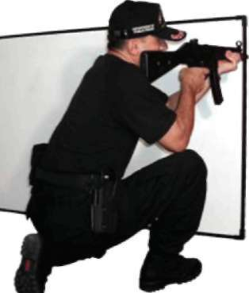
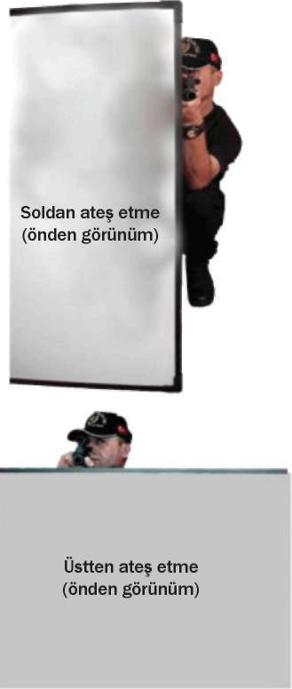
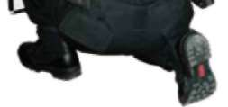
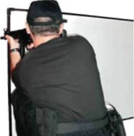

Resim-14.b.1) Sütre Gerisinde Çökerek Şarjör Değiştirme Teknikleri Sağdan Şarjör Değiştirme Soldan Şarjör Değiştirme Resim-14.b.2) Sütre Gerisinde Ayakta Şarjör Değiştirme Teknikleri 110




BÖLÜM
İLERİ SEVİYE ATIŞ TEKNİKLERİ